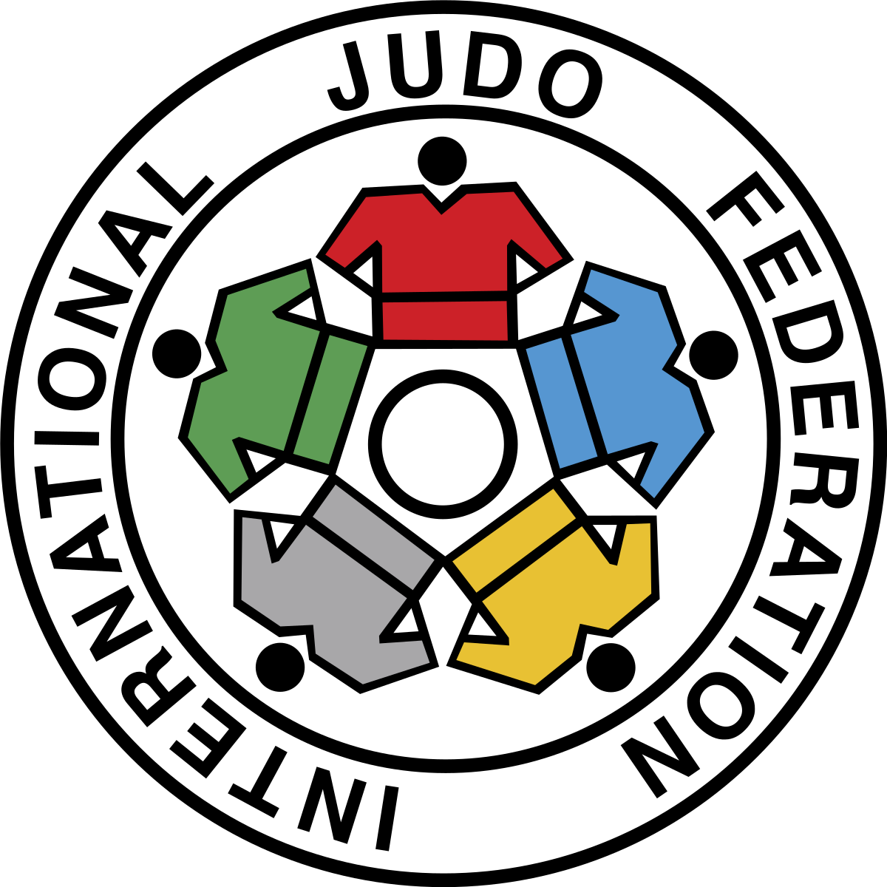
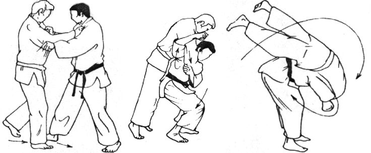
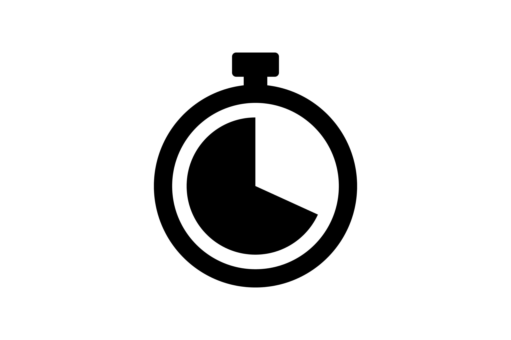

Er zijn verschillende wedstrijden en verschillende organisaties die allemaal net iets andere regels hebben. Zo heeft een grand-slam natuurlijk net
iets andere regels dan een vriendschappelijk toernooi voor senioren. Ook is het zo dat sommige technieken een bepaalde leeftijds grens heeft. Zo mogen de
allerkleinste elkaar niet om de nek pakken omdat dat veel druk op de nek zet, zo heb je ook beperkingen voor minder dan 12 (verwurgingen + klemmen).
En heeft de -16 een verbod op armklemmen. Er wordt ook een onderschijdt gemaakt tussen junioren (-21 jaar oud) senioren (21-30) en de veteranen of masters (30+).
De regels voor de junioren, senioren en masters zijn niet verschillend maar de leeftijd wordt opgeknipt. Wij kijken naar de 21+ regels van de IJF (international Judo federation)

Scoren
Je kan in een wedstrijd scoren door iemand op zijn rug te gooien (Ippon), op zijn zij te gooien (Waza-ari), iemand te laten afkloppen/opgeven (Ippon)
of in de houdgreep te houden 10 seconden voor Waza-ari en 20 voor een Ippon. Het doel is om te winnen door 1 ippon te scoren of 2 Waza-ari. Wat
misschien raar klinkt is dat een Ippon 10 punten waard is maar een Waza-ari 7 punten, echter is het maximaal aantal punten 10. Dus als je 2 Waza-ari scoort krijg
je een ippon en dus 10 punten. De scheidsrechter mag ook strafpunten uitdelen, zogenaamde shido. Je mag in totaal 3 shidos krijgen dus bij de 3e shido heb je verloren
de winnar krijgt dan 1 punt

Wedstrijd tijd
Senioren hebben 5 minuten de tijd om dit te doen (junioren 2-4 min). Ze mogen onderbroken worden door de scheidsrechter als: iemand buiten de mat stapt,
er niets gebeurt, iemands kleren zitten niet goed, iemand moet worden gezien door een arts en nog veel meer. De scheidsrechter heeft dus veel invloed op de wedstrijd
en heeft een belangrijke rol, daarom is scheidsrechter worden makkelijke beroep. Als de scheidsrechter de wedstrijd onderbreekt roept hij Mate, de tijd wordt dan
stilgezet en de deelnemers gaan weer in het midden van de mat tegenover elkaar staan, zodra de scheidsrechter hajime roept begint de wedstrijd weer. Als er na 5 minuten
niet gescoord is dan begint de golgen score. De eerste die dan een punt scoort wint, de golden scoren kan zo lang doorgaan als nodig is, dit kan dus heel lang duren.

Vastpakken
Judo is leuk als je weet waar je op moet letten, ik hoop je met deze wedstrijd te inspireren om vooral te gaan judoen maar voor nu iets om op te letten.
Een wedstrijd begint altijd zonder dat je elkaar vast hebt en om iemand op de grond te gooien moet je iemand vastpakken. Elkaar vastpakken is een heel gevecht
opzich en wordt ook wel kumi-kata genoemt. Allebij de personen proberen elkaar zo goed mogelijk vast te pakken en iedereen heeft een favoriete greep. Sommige mensen
willen graag hoog op de mouw of diep in de nekl allebij proberen ze zo goed vast te pakken en zorgen dat de andere niet goed vastheeft, als je dit doorhept wordt een
wedstrijd een stuk leuker en beter te begrijpen